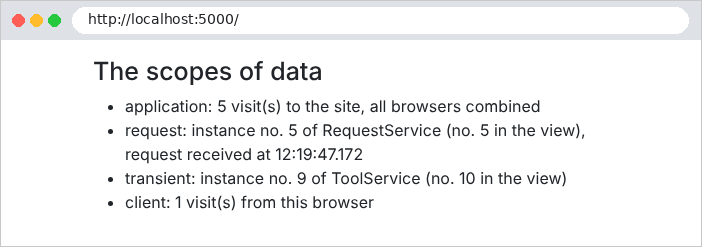

6. Data Scopes
A web application serves many users at once, and each user makes numerous requests. Data can therefore be shared at three levels, known as its scope:
- application scope: the data is shared by all users throughout the server’s lifetime (the list of doctors, for example);
- request scope: the data exists only for the duration of a request (a view’s model);
- client scope: the data is specific to a user and must persist from one request to the next (the selected language, the logged-in user).
The original course ([ASP.NET MVC], 2013) used a session for this last scope: a memory space, maintained by the server, specific to each browser. [ASP.NET Core] still uses this approach ([AddSession]), but this document, like the case study, does without it: client-scope data is stored by the browser in cookies. The server does not retain any data between requests from the same user: it is said to be stateless ([stateless]). This is what makes it possible, for example, to run multiple identical servers behind a load balancer. The trade-off: a cookie is under the user’s control, and the user can read and modify it. Therefore, only non-sensitive data—or data signed or encrypted by the server, which can then detect any modifications—is stored there: this is the case for the [TempData] cookie (Example 20) and the authentication token (Chapter 8).
On the server side, the application and request scopes correspond to the lifetimes of dependency injection services (see Example 06). [ASP.NET Core] has three of them:
Registration | Lifetime | An instance... |
AddSingleton | application | for the entire lifetime of the application, shared by all requests |
AddScoped | request | per request HTTP, shared by all who request it during that request |
AddTransient | none | For each injection: two requests, two instances |
6.1. Example 23: three scopes
The file [Services/CounterService.cs]:
- Line 7: The service will be a singleton (see [Program.cs]): its field [total] therefore has application scope;
- line 11: a web server processes multiple requests simultaneously, across multiple threads ([threads]). If two requests execute [total++] at the same time, they may both read the same value, and an increment is lost. [Interlocked.Increment] performs the read, addition, and write in a single, indivisible operation. A singleton service must always be wary of such simultaneous accesses.
The file [Services/RequestService.cs]:
- line 7: A field named [static] belongs to the class, not to an instance; it is shared by all instances. It counts the number of instances created;
- line 9: each instance is assigned a number upon creation. The service will have request-level scope: the number changes with each request.
The file [Services/ToolService.cs]:
The same instance counter, for a [transient] service.
The file [Program.cs]:
- Lines 10–12: the three lifetimes;
- Lines 23–26: A middleware stores the request's reception time in
***[HttpContext.Items], a dictionary that is created and destroyed along with the request. Everything that processes the request (filters, controller, view) can read from and write to it. This is the equivalent of [res.locals]* for [Express].
The file [Controllers/ScopesController.cs]:
- line 8: the three services are injected;
- lines 15–18: the client scope: a counter stored in a cookie. [Request.Cookies["myVisits"]] reads the cookie sent by the browser ([null] on the first visit). [int.TryParse] converts it to an integer; if the conversion fails, [myVisits] is set to 0. The action increments it and resets the cookie;
- line 19: the values are passed to the view.
The file [Views/Scopes/Scopes.cshtml]:
- lines 3–4: the [@inject Type Name] directive requests a service from the dependency injector and stores it in a view property. The view is executed during the same request as the action: we will be able to compare the instances received by the controller and by the view;
- Line 9: The request-scope value, set by the middleware.
A page, at URL http://localhost:5000/:

Let’s simulate two browsers using [curl] and two cookie files, [a.txt] and [b.txt]. Browser A makes two requests, then browser B makes one, and finally A makes one more:
(only the items in the list are shown). We observe that:
- the application counter counts all visits: 1, 2, 3, 4;
- each request has its own instance of [RequestService]: 1, 2, 3, 4. During a request, the controller and the view receive the same instance;
- each injection of [ToolService] creates an instance: the controller and the view receive two different ones, and each request creates two new ones;
- the client counter is specific to each browser: A has 3 visits, B has 1.
The cookie is controlled by the client, which can send whatever value it wants:
For a visit counter, this is irrelevant. For sensitive data (the user’s identity, their role), the server must be able to detect tampering: Chapter 8 shows how.
A rule follows from these lifetimes: a service must not depend on a service with a shorter lifetime. A singleton that receives a service such as [Scoped] would retain it indefinitely, well beyond the request for which it was created. [ASP.NET Core] checks for compliance with this rule at startup, in development mode, and refuses to start if the rule is violated. In the case study:
Scope | Data | Where? |
application | lists of doctors and clients, dictionaries, pending CAPTCHAs, attempt counters | Singleton services ([ListCache], [Translator], [CaptchaService]...) |
Query | database access ([DbContext]), repositories, business layer, common view model; logged-in user | [Scoped] services ([RdvMedecinsDbContext], [BusinessService], [ApplicationModel]...) ; [HttpContext.User], [HttpContext.Items] |
client | authentication token, language, flash message | cookies |